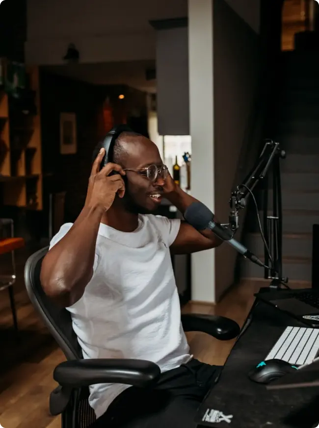

Take your podcast to thenextlevel
next
level
Listen on
Listen on


Stop rolling with those default settings on your mic. These small tweaks will take you from sounding good to great.

Is hardware really worth it when it comes to podcasting? The answer is...it depends. Here’s our reasons on why you might want to consider picking something up.

With so many microphones on the market, how are you supposed to know what’s the best? Take a look at our top picks.